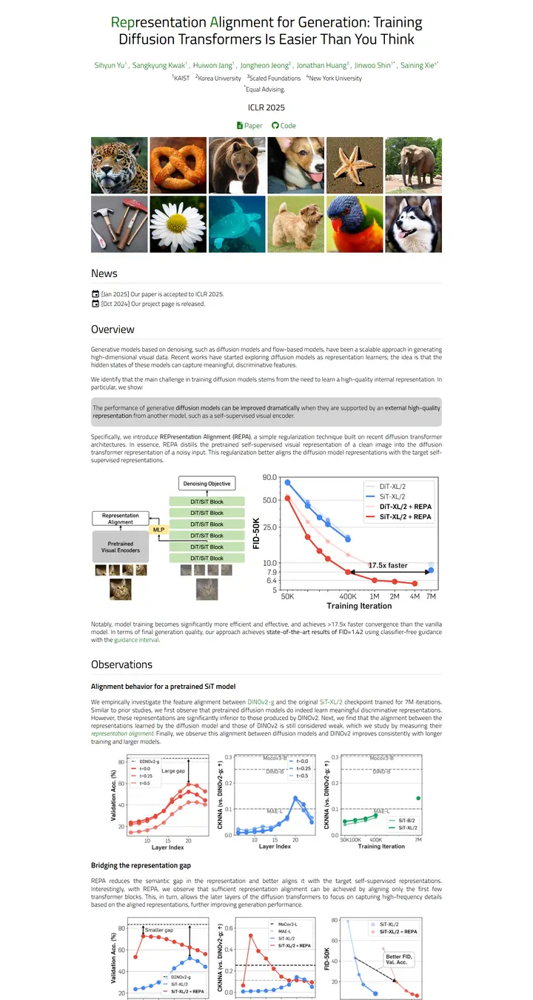
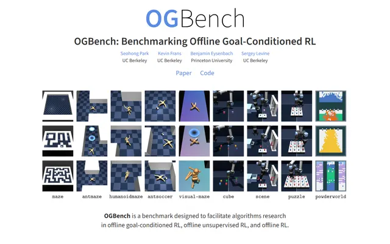
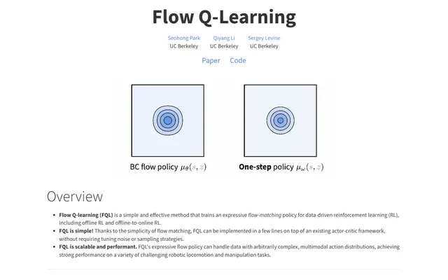
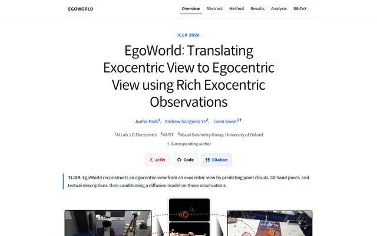
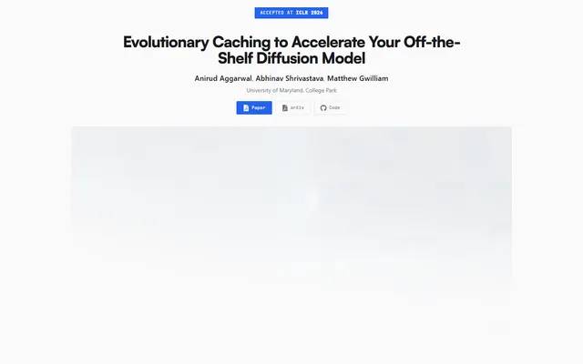
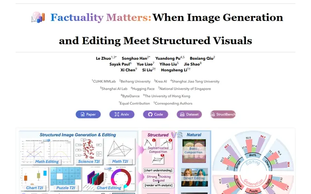
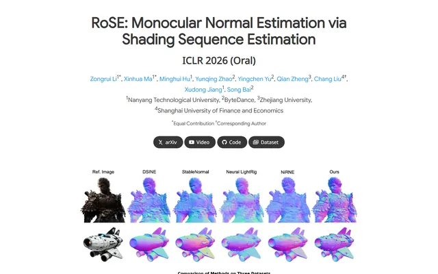

Representation Alignment for Generation: Training Diffusion Transformers Is Easier Than You Think
A light Titillium page where the acronym grows out of the title in forest green.

Checked against the rendered page. Declared weights 500 and 700 are not loaded and render with the 400 and 600 faces.
Why it is here
The accent-coloured initials in the title make the acronym part of the look. A tight image-grid teaser and a highlighted callout box sit before results charts presented side by side. A clean, readable hierarchy.
Overview
Color Palette
Typography
Titillium Web
Representation Alignment for Generation: Training Diffusion Transforme
Abstract · Method · Results · BibTeX — 0123456789
Spacing & Shape
Page Modules
Guidelines
More like this

OGBench: Benchmarking Offline Goal-Conditioned RL
A tidy lab notebook: one cornflower-blue syllable, a grid of little worlds, then plain prose under thin rules.

Flow Q-Learning
A clean lecture handout where the headings whisper and the figures speak.

EgoWorld: Translating Exocentric View to Egocentric View using Rich Exocentric Observations
A well-kept lab notebook with a sticky index: hairline rules, one blue thread, and a teal margin note.

Evolutionary Caching to Accelerate Your Off-the-Shelf Diffusion Model
A product keynote on zinc paper: one electric-blue key, a slide deck for a hero, and a plot you can poke.

Factuality Matters: When Image Generation and Editing Meet Structured Visuals
A benchmark report bound in a blue-to-tangerine sunrise: Georgia masthead, gradient pills, and a leaderboard that sorts itself.

Monocular Normal Estimation via Shading Sequence Estimation
The Nerfies house style wearing iridescent normal maps: grey type, blue names, and lavender-cyan surfaces doing all the talking.